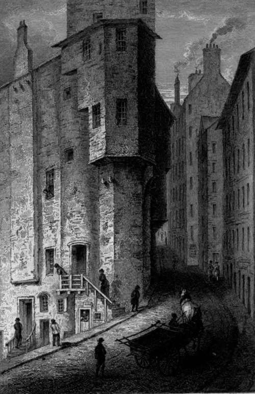

Ninth Letter. Part 11
Description
This section is from the book "Letters On Demonology And Witchcraft", by Walter Scott. Also available from Amazon: Letters On Demonology & Witchcraft.
Ninth Letter. Part 11
The jury unmoved by these affecting circumstances, proceeded upon the principle that the confession of the accused could not be considered as made under the influence of torture, since the bars were not actually upon her limbs at the time it was delivered, although they were placed at her elbow ready to be again laid on her bare shins, if she was less explicit in her declaration than her auditors wished. On this nice distinction, they in one voice found Margaret Barclay guilty. It is singular that she should have again returned to her confession after sentence, and died affirming it ;—the explanation of which, however, might be, either that she had really in her ignorance and folly tampered with some idle spells, or that an apparent penitence for her offence, however imaginary, was the only mode in which she could obtain any share of public sympathy at her death, or a portion of the prayers of the clergy and congregation, which, in her circumstances, she might be willing to purchase, even by confession of what all believed respecting her. It is remarkable, that she earnestly entreated the magistrates that no harm should be done to Isobel Crawford, the woman whom she had herself accused. This unfortunate young creature was strangled at the stake, and her body burned to ashes, having died with many expressions of religion and penitence.
It was one fatal consequence of these cruel persecutions, that one pile was usually lighted at the embers of another. Accordingly, in the present case, three victims having already perished by this accusation, the magistrates, incensed at the nature of the crime, so perilous as it seemed to men of a maritime life, and at the loss of several friends of their own, one of whom had been their principal magistrate, did not forbear to insist against Isobel Crawford, inculpated by Margaret Barclay's confession. A new commission was granted for her trial, and after the assistant minister of Irvine, Mr. David Dickson, had made earnest prayers to God for opening her obdurate and closed heart, she was subjected to the torture of iron bars laid upon her bare shins, her feet being in the stocks, as in the case of Margaret Barclay.
She endured this torture with incredible firmness, since she did " admirably, without any kind of din or exclamation, suffer above thirty stone of iron to be laid on her legs, never shrinking thereat in any sort, but remaining, as it were, steady." But in shifting the situation of the iron bars, and removing them to another part of her shins, her constancy gave way ; she broke out into horrible cries (though not more than three bars were then actually on her person) of—" Tak aff—tak aff!" On being relieved from the torture, she made the usual confession of all that she was charged with, and of a connexion with the devil, which had subsisted for several years. Sentence was given against her accordingly. After this had been denounced, she openly denied all her former confessions, and died without any sign of repentance, offering repeated interruption to the minister in his prayer, and absolutely refusing to pardon the executioner.
This tragedy happened in the year 1613, and recorded as it is very particularly, and at considerable length, forms the most detailed specimen I have met with, of a Scottish trial for witchcraft,—illustrating in particular, how poor wretches, abandoned as they conceived by God and the world, deprived of all human sympathy, and exposed to personal tortures of an acute description, became disposed to throw away the lives that were rendered bitter to them, by a voluntary confession of guilt, rather than struggle hopelessly against so many evils. Four persons here lost their lives, merely because the throwing some clay models into the sea, a fact told differently by the witnesses who spoke of it, corresponded with the season, for no day was fixed, in which a particular vessel was lost! It is scarce possible that, after reading such a story, a man of sense can listen for an instant to the evidence founded on confessions thus obtained, which has been almost the sole reason by which a few individuals, even in modern times, have endeavoured to justify a belief in the existence of witchcraft.
The result of the judicial examination of a criminal, when extorted by such means, is the most suspicious of all evidence ; and even when voluntarily given, is scarce admissible, without the corroboration of other testimony.
We might here take leave of our Scottish history of witchcraft, by barely mentioning, that many hundreds, nay perhaps thousands, lost their lives during two centuries, on such charges and such evidence as proved the death of those persons in the trial of the Irvine witches. One case, however, is so much distinguished by fame among the numerous instances which occurred in Scottish history, that we are under the necessity of bestowing a few words upon those celebrated persons, Major Weir and his sister.
The case of this notorious wizard was remarkable chiefly from his being a man of some condition, (the son of a gentleman, and his mother a lady of family in Clydesdale,) which was seldom the case with those that fell under similar accusations. It was also remarkable in his case that he had been a Covenanter, and peculiarly attached to that cause. In the years of the Commonwealth, this man was trusted and employed by those who were then at the head of affairs, and was, in 1649, commander of the City-guard of Edinburgh, which procured him his title of Major. In this capacity he was understood, as was indeed implied in the duties of that officer at the period, to be strict in executing the severest penalties upon such Royalists as fell under his military charge. It appears that the Major, with a maiden sister who had kept his house, was subject to fits of melancholic lunacy, an infirmity easily reconcilable with the formal pretences which he made to a high show of religious zeal. He was peculiar in his gift of prayer, and, as was the custom of the period, was often called to exercise this talent by the bedside of sick persons, until it came to be observed, that, by some association, which it is more easy to conceive than to explain, he could not pray with the same warmth and fluency of expression, unless when he had in his hand a stick of peculiar shape and appearance, which he generally walked with. It was noticed, in short, that when this stick was taken from him, his wit and talent appeared to forsake him. This Major Weir was seized by the magistrates on a strange whisper that became current respecting vile practices, which he seems to have admitted without either shame or contrition. The disgusting profligacies which he confessed, were of such a character that it may be charitably hoped most of them were the fruits of a depraved imagination, though he appears to have been in many respects a -wicked and criminal hypocrite. "When he had completed his confession, he avowed solemnly that he had not confessed the hundredth part of the crimes which he had committed. From this time he would answer no interrogatory, nor would he have recourse to prayer, arguing, that as he had no hope whatever of escaping Satan, there was no need of incensing him by vain efforts at repentance. His witchcraft seems to have been taken for granted on his own confession ; as his indictment was chiefly founded on the same document, in which he alleged he had never seen the devil, but any feeling he had of him was in the dark. He received sentence of death, which he suffered 12th April, 1670, at the Gallow-hill between Leith and Edinburgh. He died so stupidly sullen and impenitent, as to justify the opinion that he was oppressed with a kind of melancholy frenzy, the consequence perhaps of remorse, but such as urged him not to repent, but to despair. It seems probable that he was burnt alive. His sister, with whom he was supposed to have had an incestuous connexion, was condemned also to death, leaving a stronger and more explicit testimony of their mutual sins than could be extracted from the Major. She gave, as usual, some account of her connexion with the queen of the fairies, and acknowledged the assistance she received from that sovereign in spinning an unusual quantity of yarn. Of her brother, she said, that one day a person called upon them at noonday with a fiery chariot, and invited them to visit a friend at Dalkeith, and that while there her brother received information of the event of the battle of "Worcester. No one saw the style of their equipage except themselves. On the scaffold, this woman, determining, as she said, to die " with the greatest shame possible," was with difficulty prevented from throwing off her clothes before the people, and with scarce less trouble was she flung from the ladder by the executioner. Her last words were in the tone of the sect to which her brother had so long affected to belong : " Many," she said, " weep and lament for a poor old wretch like me; but, alas ! few are weeping for a broken Covenant."
The Bow. Edinburgh House Of Major Weir - London William Tegg
Continue to: